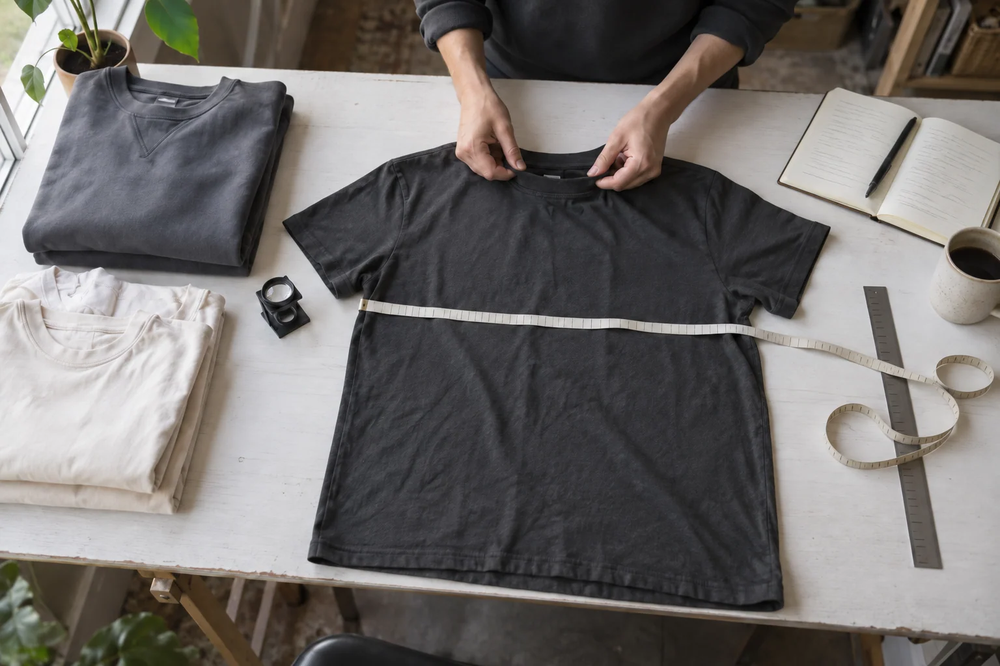

Small decisions,
real profit.
What to try, what to defer, and what needs evidence before you spend.
A working decision library for a clothing brand, other physical products, AI-assisted shopping and a possible ecommerce SaaS.
Explore the decisions
Exploration, before investment. The proposed products and prices have no established sales or willingness-to-pay evidence. Each recommendation is a decision to test.
Download the full report, MarkdownThe working position
Make the next spend earn its place.
Start with the uncertainty that could change the decision. Give the test a cost ceiling and a stop rule before running it.
Original clothing
Understated anime and dark-fantasy influences, a real garment sample and one decoration.
Other physical products
A specific customer problem, realistic landed cost and a small path to paid orders.
AI-assisted shopping
Product information that a shopper can verify, and purchase evidence beyond mentions.
Ecommerce SaaS
A merchant problem worth paying to solve. External paid pilots test demand independently of our store.
Channels & evidence
Useful ideas. Uneven evidence.
The catalogue and review counts below come from the collected data. Coverage can be partial. View counts help select videos; they do not establish that a tactic caused profit.
- GPT-6 LunaCollect source evidence, review captions and check current rules.
- GPT-6.1 SolApply the findings to four business cases and propose bounded tests.
- GPT-6 Astra · maxChallenge the evidence, reconcile costs and choose the next actions.
Open the research toolbox and AI workflow Methods, tool costs, human checks and limits.
The channel evidence is loading.
Explore the reviewed videos
Open the original video to hear the creator’s full argument. The digest records the evidence level and its limits.
Ideas worth carrying forward
Borrow the question.
Test your own answer.
The applied principles are loading.


What an order leaves
Revenue is the beginning
of the calculation.
Edit a crew or tee scenario to see the expected contribution after variable costs and a labour allowance. These are modelling assumptions, not observed sales. A positive contribution still has to cover fixed costs and setup time.
One-order contribution model
Illustrative UK seller and UK delivery scenario, assuming no VAT registration. Prices include delivery. Supplier costs come from the existing clothing research and still need a checkout quote. Refunds, replacements, labour, acquisition cost and monthly fixed costs are editable assumptions; this simplified monthly model differs from the full launch-cost model in the report.
Refund and replacement rates are chosen scenarios, not observed rates. Full refunds return the whole payment; original fulfilment and payment fees remain spent. Separate replacements add another full fulfilment cost. Acquisition cost and the labour allowance are assumptions. Replace fees with actual provider terms.
- Contribution per order
- Pending
- Orders to cover monthly fixed costs
- Pending
- Acquisition ceiling before contribution hits zero
- Pending
The starting £10 acquisition input is a sensitivity case. The reviewed pilot uses chosen acquisition ceilings of £8 for the crew and £5 for the labelled tee to aim for £18 and £8 contribution respectively. Initial paid-ad spending is £0; these limits are not evidence that acquisition at those costs is available.
Where the customer payment goes
Formula and omitted costs
Expected contribution = (1 − refund rate) × customer payment − (1 + replacement rate) × (production + shipping + extras) − payment fees − labour allowance − acquisition cash. Payment fees = payment × percentage fee + fixed fee. Break-even orders = monthly fixed costs ÷ positive contribution, rounded up. Zero or negative contribution cannot fund fixed costs.
The acquisition ceiling assumes zero contribution. It leaves nothing for fixed costs or profit. Founder setup time, taxes, VAT if applicable, upfront sample and development costs, returns postage, unsalvageable stock and any omitted expense still need funding. The model assumes no salvage or supplier reimbursement.
The stage gates
Move when the evidence
earns the next step.
This is a sequence of funding decisions. Passing a gate depends on the evidence named in that stage; completing an activity alone is not proof of demand.
- The staged experiment plan is loading.
Decision explorer
A queue you can question.
Open a decision for its reasoning, business applications, alternatives and bounded experiment. The critical review can accept, modify, reject or defer the original recommendation.
The decision library is loading.
Your shortlist is saved only in this browser for this report. It does not change the research or the critical review.
Limits & sources
Keep the claim close
to its evidence.
What this research can establish
Each source carries its evidence level: transcript reviewed, creator description, title or metadata, primary corroboration, analyst inference, or an experiment hypothesis. Metadata-only records cannot support claims about a creator’s full argument.
Creator revenue is self-reported unless independent evidence says otherwise, and revenue is not audited profit. Courses and affiliate relationships may create incentives. Popularity and a persuasive anecdote do not establish causation.
Recommendations apply the sources to an unvalidated business hypothesis. Thresholds and spend ceilings are proposed operating choices. Real samples, paid orders, returns, acquisition costs and merchant interviews can change the conclusion.
Download the collected channel catalogue, JSON